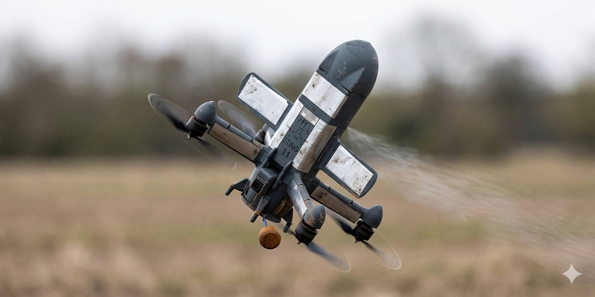

지금 진행 중인 개발An active development project
제품은 현재 개발 중이며, 확정된 양산 구성이나 공개된 성능 사양은 없습니다.The product is currently in development, without a confirmed production configuration or published performance specification.
IN DEVELOPMENT지금 개발 중인 요격 드론.An interceptor drone currently in development.
제품 개요Product overview
개념 이미지 · 최종 구성과 다를 수 있습니다.Concept image · Final configuration may differ.
AEGIS Interceptor는 현재 개발 중인 요격 드론입니다. 최종 구성과 성능 사양은 확정되지 않았습니다.AEGIS Interceptor is an interceptor drone currently in development. Its final configuration and performance specifications have not been confirmed.
AEGIS Interceptor는 요격 드론 개념으로 개발되고 있습니다. 여기서는 의도한 역할과 아직 확인되지 않은 능력을 분명히 나눠 적습니다.AEGIS Interceptor is being developed as an interceptor-drone concept. This section separates the intended system role from capabilities that have not yet been confirmed.
제품은 현재 개발 중이며, 확정된 양산 구성이나 공개된 성능 사양은 없습니다.The product is currently in development, without a confirmed production configuration or published performance specification.
IN DEVELOPMENT정해진 방향은 요격 역할을 맡는 공중 플랫폼입니다. 최종 운용 방식은 아직 확정되지 않았습니다.The defined direction is an airborne platform intended to take an interceptor role. Its final operating method remains unconfirmed.
CONCEPT ROLE비행 성능, 제어 기능, 연동 방식이 검증된 뒤에는 향후 대응 구성을 공중으로 넓힐 수 있습니다.The concept may extend a future response architecture into the air after flight performance, control functions and interfaces are validated.
VALIDATION REQUIRED개발이 진행 중입니다. 현 단계에서는 완성된 양산 구성을 제시하지 않습니다.Development is ongoing. A completed production configuration is not presented at this stage.
이미지는 제품 개념을 보여 줍니다. 최종 기체를 확인한 사진이 아닙니다.The image illustrates the product concept. It is not a verified photograph of the final aircraft.
개발 중In development
개발 현황은 회사 제공 정보를 기준으로 합니다. 비행 성능, 자율 기능, 최종 하드웨어 사양은 확인되지 않았습니다. 이미지는 개념 시각 자료이며 확인된 제품 사진이 아닙니다.Development status is based on company-provided information. Flight performance, autonomous functions and final hardware specifications remain unconfirmed. The image is presented as a concept visual, not a verified product photograph.
출처: 회사 제공 제품 업데이트 · 기존 제품 개요 · 내부 사업 계획서Sources: Company-provided product update · Existing product overview · Local project plan
자료 확인일:Sources reviewed: 2026.09.28